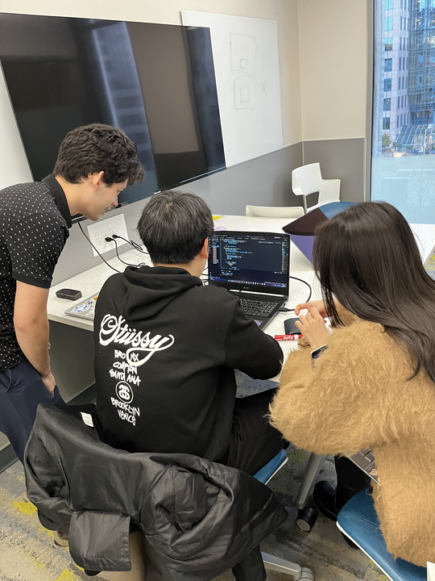

How Long Does it Take?
Posted on: February 4, 2025
How long does it take to get a six-pack? How long does it take to build physique? How long does it take to become a sofware developer? Well, the answer is obvious. It depends.
What is software development anyway? It's the iterative process of designing, building, testing, and optimizing programs and tools that solve problems. The process involves troubleshooting, analyzing, debugging, developing algorithms, storing, retrieving, managing, and deploying. And all of this can't be learned in a single day.
I've been programming for almost 4 years. I started in summer 2021 when I enrolled in the applied software development certificate program at the British Columbia Institute of Technology. Over the years, I completed a total of 3 programs, namely applied computer information systems and applied web development programs ontop of the one mentioned above. I'm also one course away from completing the computer systems certificate program. I took fundamentals of programming with Python, object-oriented programming with Java, procedural programming with C, web dev with HTML CSS and JS, frontend with React, backend with Node, relational database design with SQL, mathematics for computing, and right now I'm smack in the middle of learning computer architecture and organization. I'm planning to take discrete math, data communications, operating systems and algorithm analysis and design in the coming months.
During my studies, I developed a ton of programs with the languages I learned, namely a few 2D sprite games, a banking system, and lots of web apps including a reddit-like social platform, a personal finance app, and a chat app. For every program I've built, I've grown as much. That's how I got my software developer job at a tech startup. You need to continuously build more and more complex programs and face new challenges in order to grow as a software developer. You will also become more and more confident in your skills and knowledge.
1000+ Hours?
When you look at coding bootcamps and see things like "become a developer in x months", I think in my head "yeah, that's totally possible... if you program for 8+ hours per day". Of course, it's not just programming, but also learning software development and engineering best practices. It's just like working out: you want to train with proper form and sufficient effort and achieve progressive overload while maintaining proper nutrition. You want to learn the proper ways of developing software and the science behind it, the architecture, the design, the process. If you dedicate 6 months at a bootcamp learning computer science while programming for 8+ hours a day, that's roughly 1500 hours of quality coding and learning. It just makes more sense to think of it in terms of hours than months. I did the rough math and I'm pretty sure I've been programming for 1500 hours. Considering that I rarely took a break from programming, even if I had programmed for one hour per day, which I've definitely dedicated multiple times that, I would be at around 1500 hours. So yes, you can become a software developer in 6 months, theoretically, if you do the right things for the right amount of time. For me, it took 4 years.
Code First, or Computer Science First?
One of my coworkers at the coding academy I work at is deadset on teaching his students computer architecture and operating systems first. Registers, busses, ALU, pipelines, parity bits, instruction sets, assembly... I assume a lot of you would agree with his approach. I beg to differ. I teach my students how to code in Python first. I teach them everything including OOP. Then I tell them the importance of type safety and languages like Java and C. I don't teach them C until they've learned HTML, CSS, JS, TS, React and Node. Then, I teach them computer architecture and OS. Finally, I teach them C. It's not too late to learn C at this stage, in fact it's easier and less gruesome than learning it as a first or second, or even third language. That's roughly how I learned computing, and that's how I teach as an instructor.
What About the Stack?
If you've learned the fundamentals of programming, you'll then probably wonder what stack you should master. It really depends on what software you want to develop. I thrive in full stack, so I use Typescript, React with Tanstack router and query, Node with Hono paired with zod and postgreSQL while using Bun and Ubuntu. In fact, this is the stack we use at the tech startup I work at. Yes, I have two jobs because I'm a pleb. We're currently building a prototyping tool that uses generative AI. Whatever the stack, just make sure you like it, because you will be spending lots and lots of hours, perhaps months and years, on them.
The most important takeaway is that you need to dedicate thousands, if not tens of
thousands of hours to programming and learning computer science and software development. There
is, in fact, no easy and quick way. CHOOSE YOUR HARD. The Primeagen mentioned. Sort of. So after
all this, if you've decided to come along for the
ride, buckle up,
because
it's going to get rough... but also fun :)
... sometimes.